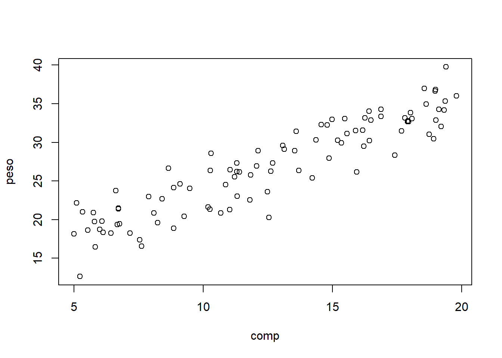
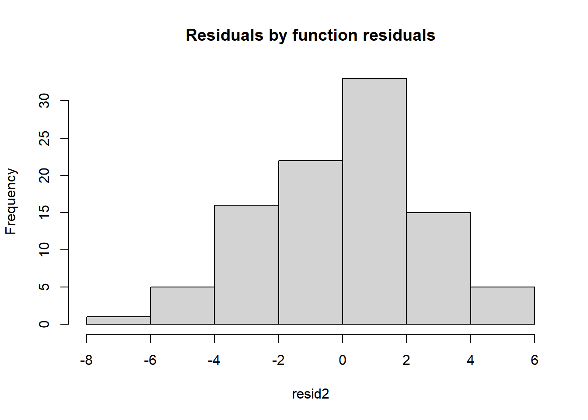
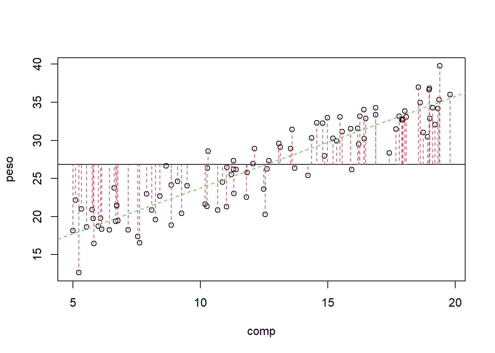

Chapter 7 Class 6 13 10 2020
7.1 Implementing a regression
We begin by reading the data in “lagartos.txt” and fitting a regression model to it.
Read the data in
#folder<-"../Aula6 13 10 2020/"
folder<-"extfiles/"
lagartos <- read.csv(file=paste0(folder,"lagartos.txt"), sep="")
n <- nrow(lagartos)We see that we have 97 observations.
Plot the data

A linear model seems adequate. Lets fit a regression line to the data
##
## Call:
## lm(formula = peso ~ comp, data = lagartos)
##
## Residuals:
## Min 1Q Median 3Q Max
## -6.5199 -1.6961 0.3495 1.7490 4.7127
##
## Coefficients:
## Estimate Std. Error t value Pr(>|t|)
## (Intercept) 11.72234 0.72299 16.21 <2e-16 ***
## comp 1.20233 0.05402 22.26 <2e-16 ***
## ---
## Signif. codes: 0 '***' 0.001 '**' 0.01 '*' 0.05 '.' 0.1 ' ' 1
##
## Residual standard error: 2.415 on 95 degrees of freedom
## Multiple R-squared: 0.8391, Adjusted R-squared: 0.8374
## F-statistic: 495.3 on 1 and 95 DF, p-value: < 2.2e-16Remember that a linear model is just a special GLM:
##
## Call:
## glm(formula = peso ~ comp, family = gaussian(link = "identity"),
## data = lagartos)
##
## Deviance Residuals:
## Min 1Q Median 3Q Max
## -6.5199 -1.6961 0.3495 1.7490 4.7127
##
## Coefficients:
## Estimate Std. Error t value Pr(>|t|)
## (Intercept) 11.72234 0.72299 16.21 <2e-16 ***
## comp 1.20233 0.05402 22.26 <2e-16 ***
## ---
## Signif. codes: 0 '***' 0.001 '**' 0.01 '*' 0.05 '.' 0.1 ' ' 1
##
## (Dispersion parameter for gaussian family taken to be 5.830492)
##
## Null deviance: 3441.8 on 96 degrees of freedom
## Residual deviance: 553.9 on 95 degrees of freedom
## AIC: 450.27
##
## Number of Fisher Scoring iterations: 2as we can see the output looks a bit different (after all, lm and glm are different functions!), but the results are exactly the same. This does not prove it, but it illustrates by example that a lm is just a GLM with a Gaussian response and an identity link function.
Lets use the results from lm, while noting that everything else would be the same.
The estimated regression line is
peso =11.72 +1.2 \(\times\) comp
and the estimated R-squared is 0.84. The standard error associated with the model is estimated to be 2.4146. Below we explain what each of these values correspond to.
The estimated standard error corresponds to the standard deviation of the residuals of the model, that is, the diference between the observations and the predicted values given the model.
The observation we have already, those are the peso. We can obtain the predicted peso for each observation with the function predict, but here we do it manually so that we see that the errors are just the observations minus the predictions.
#get estimated values
estimated<-with(lagartos,summary(lmlag)$coefficients[1]+summary(lmlag)$coefficients[2]*comp)
# note this would be the same as
# estimated<-predict(lmlag)Now we can compute the residuals and their corresponding standard error
#get residuals
#erros = observações - valores previstos
# e= y- (a+bx)
# y= (a+bx) + e
resid<-lagartos$peso-estimated
sd(resid)## [1] 2.402032Note as predict, we could use just the function residuals with the model object as argument to get us the residuals in a single line of code.
The reason the above standard error is not exactly the same as in the model output above has to do with the degrees of freedom, a concepth that is hard to explain in this applied context, but relates to the number of available independent bits of information available. So turst me when I say that we loose a degree of freedom for each parameter estimated in a model. The exact value of the standard deviation as estimated in the model must account for that loss of one extra degree of freedom (associated with estimating the slope of the line), and so the standard formula of the sd needs to be adjusted for the lost degree of freedom, like this:
#Residual Standard error (Like Standard Deviation)
#the right way
#Subtract one to ignore intercept
k=length(lmlag$coefficients)-1
#get the error sum of squares
SSE=sum(lmlag$residuals**2)
#Residual Standard Error
sqrt(SSE/(n-(1+k))) ## [1] 2.414641## [1] 2.414641Now we get the exact same value as above: 2.4146412.
The summary of the model above is very useful, but nothing like adding the estimated model to the plot with the data. We can easily add the line to the plot with function abline (tip: note the ab in abline correspond to the \(a\) and \(b\) in \(y=a+bx\), but the function abline is “smart” enough to take an object of class lm and extract the corresponding \(a\) and \(b\) for plotting)
#with(lagartos,plot(peso~comp))
plot(peso~comp,data=lagartos)
#these next 3 lines are equivalent
abline(lmlag,col="orange")
abline(a=11.72234,b=1.20233,col="pink")
# y = a + bx
abline(a=summary(lmlag)$coefficients[1,1],b=summary(lmlag)$coefficients[2,1],col="brown")
Note the last line works because the parameter estimates are hold in a component of the summary of the fitted model called coefficients
## Estimate Std. Error t value Pr(>|t|)
## (Intercept) 11.722343 0.72299153 16.21367 4.135172e-29
## comp 1.202333 0.05402397 22.25555 1.839784e-39Additionally, we can also add the residuals in the plot (we use the very handy function segments, that adds segments to plots, to do so)
# get estimated/predicted values with function residuals
estimated2<-predict(lmlag)
#plot the data
with(lagartos,plot(peso~comp,pch=21,bg="brown",col="green"))
abline(lmlag,col=3,lty=2)
#add residuals
with(lagartos,segments(x0 = comp,y0 = peso, x1= comp, y1=estimated,lty=2,col="red"))
The regression line is the line that minimizes the sum of the red distances in the plot above. That is also why it is called a minimum squares estimate in the special case of a Gaussian model (in PT, é a reta dos mínimos quadrados).
The residuals should, if the model is reasonable - and here that should be the case - be well approximated by a Gaussian distribution. Note we can get the values of the residuals by the difference between the observations and the estimated values, as we did above. We can look at their histogram below
hist(resid,main="Residuals by hand",freq=FALSE)
#adding the theorethical density of a Gaussian with mean 0 and the
#correct standard error
lines(seq(-8,8,by=0.1),dnorm(seq(-8,8,by=0.1),mean=0,sd=summary(lmlag)$sigma))
or alternatively we can use the bespoke function residuals

It is often said that the \(R^2\) represents the amount of variation in the response that the regression explains. Why is that?
Because if you assume that all the variability in the response data, the \(y_i\) the diference between the data points and a common mean
\[\sum_{i=1}^n (y_i- \bar y)^2\]
in an image, the sum of the square of these quantities
#plot
with(lagartos,plot(peso~comp))
abline(lmlag,col=3,lty=2)
abline(h=mean(lagartos$peso))
with(lagartos,segments(x0 = comp,y0 = peso, x1= comp, y1=mean(peso),lty=2,col=2))
## [1] 3441.795and the variability that is not explained is the one that remains in the errors (the corresponding plot was shown above)
\[\sum_{i=1}^n (y_i- \hat y_i)^2\]
## [1] 553.8968then the ratio of those two quantities is what is NOT explained by the regression model, and therefore, 1 minus that is what explained by the regression model.
## [1] 0.8390675And that… as noted above… is the \(R^2\)=0.8391. This comes from the fact that all of the variability in the data (the \(y\), the response, here the peso) can be decomposed into the variability explained by the model, and the unexplained variability, that of the errors. In a formula
\[SS_{TOTAL}=SS_{REGRESSÃO}+SS_{ERRO}\]
Note naturally we could also represent in an image what is explained by the regression model, which is
\[\sum_{i=1}^n (\hat y_i- \bar y)^2\]
#plot
with(lagartos,plot(peso~comp))
abline(lmlag,col=3,lty=2)
abline(h=mean(lagartos$peso))
with(lagartos,segments(x0 = comp,y0 = estimated, x1= comp, y1=mean(peso),lty=2,col=2))
and that naturally is obtained as
## [1] 2887.898and hence the total variability is given by the sum \(SS_{REGRESSÃO}+SS_{ERRO}\)
## [1] 3441.795## [1] 3441.795So, always remember that
\[SS_{TOTAL}=SS_{REGRESSÃO}+SS_{ERRO}\]
This is also something that comes out often in books without a clear explanation of the reaon why that holds. While here I show it by example, it could be easily demonstrated algebraically if one wanted that
\[\sum_{i=1}^n (y_i- \bar y)^2=\sum_{i=1}^n (\hat y_i- \bar y)^2 + \sum_{i=1}^n (y_i- \hat y_i)^2\]
If you want that, this 28 minute video shows you the proof: https://www.youtube.com/watch?v=aQ32qTjqqJM I think it could take just 5 minutes ;) but many thanks to Dmitry Leiderman for having it out there! He does it in the context of ANOVA, but ANOVA is just a special case of regression, were you have a continous response and a single categorical explanatory variable. Therefore, have fun !
7.2 Simulating regression data
Using the above, simulate data assuming that the TRUE relation between the weight and length of a lizzard was given by
\[ peso = 12 + 1.2 * comp \]
We consider that the usual length of a lizard can be between 5 and 20 cm, and the standard error is 4.
As in the data we will have 97 lizards
Then you were told to create the lengths:

and then to create weights of lizards
If we plot the data, all points are in a single line. Why, because there is no randomness.
This means that if you try to run a model, it gives you a warning that the model might be unreliable
## Warning in summary.lm(lm(ys ~ xs)): essentially perfect fit: summary may be
## unreliable##
## Call:
## lm(formula = ys ~ xs)
##
## Residuals:
## Min 1Q Median 3Q Max
## -5.595e-15 -2.460e-15 -1.878e-15 -1.422e-15 1.873e-13
##
## Coefficients:
## Estimate Std. Error t value Pr(>|t|)
## (Intercept) 1.200e+01 6.050e-15 1.983e+15 <2e-16 ***
## xs 1.200e+00 4.611e-16 2.603e+15 <2e-16 ***
## ---
## Signif. codes: 0 '***' 0.001 '**' 0.01 '*' 0.05 '.' 0.1 ' ' 1
##
## Residual standard error: 1.934e-14 on 95 degrees of freedom
## Multiple R-squared: 1, Adjusted R-squared: 1
## F-statistic: 6.773e+30 on 1 and 95 DF, p-value: < 2.2e-16So… , we add some variance, and plot the data:

Using the code above, experiment with changing the standard deviation of the error, and see what happens to the estimated \(R^2\), to the parameter estimates, to the estimated error, and to how close the estimated regression mode is to the true model (note this is the amazing advantage of a simulation, which we do not have in real data, we know what reality is, and a true model exists!). This will give you a good feeling for what a regression model is and what is does, and what it can’t do. An example of what it can’t give you is reliable estimates when the error is large compared to the systematic part of the model.
n <- 97
#simular comprimentos
comp.sim <- runif(n,5,20)
a<-12
b<-1.2
#simular pesos
peso.sim<-a+b*comp.sim+rnorm(n,mean=0,sd=2)
data.sim=data.frame(csim=comp.sim,psim=peso.sim)
plot(psim~csim,data=data.sim)
mod.sim<-lm(psim~csim,data=data.sim)
abline(mod.sim,col="red")
summary(mod.sim)##
## Call:
## lm(formula = psim ~ csim, data = data.sim)
##
## Residuals:
## Min 1Q Median 3Q Max
## -5.3460 -1.1652 0.1329 1.5072 3.0036
##
## Coefficients:
## Estimate Std. Error t value Pr(>|t|)
## (Intercept) 11.70390 0.56783 20.61 <2e-16 ***
## csim 1.20912 0.04325 27.96 <2e-16 ***
## ---
## Signif. codes: 0 '***' 0.001 '**' 0.01 '*' 0.05 '.' 0.1 ' ' 1
##
## Residual standard error: 1.822 on 95 degrees of freedom
## Multiple R-squared: 0.8916, Adjusted R-squared: 0.8905
## F-statistic: 781.6 on 1 and 95 DF, p-value: < 2.2e-16abline(a,b,col="green")
legend("topleft",legend=c("Estimated line","True model"),col=c("red","green"),lty=1,inset=0.05)
7.2.1 What is the effect of increasing the error: a simulation experiment
Now, let’s consider there’s more and less variance. We also add to each plot the real line (that with the true parameter values) and the one with the estimated parameter values.
par(mfrow=c(2,3))
ys=a+b*xs+rnorm(n,0,1)
plot(xs,ys)
mod1=lm(ys~xs)
abline(mod1,col="red")
abline(a,b,col="green")
ys=a+b*xs+rnorm(n,0,2)
plot(xs,ys)
mod2=lm(ys~xs)
abline(mod2,col="red")
abline(a,b,col="green")
ys=a+b*xs+rnorm(n,0,4)
plot(xs,ys)
mod4=lm(ys~xs)
abline(mod4,col="red")
abline(a,b,col="green")
ys=a+b*xs+rnorm(n,0,10)
plot(xs,ys)
mod10=lm(ys~xs)
abline(mod10,col="red")
abline(a,b,col="green")
ys=a+b*xs+rnorm(n,0,20)
plot(xs,ys)
mod20=lm(ys~xs)
abline(mod20,col="red")
abline(a,b,col="green")
ys=a+b*xs+rnorm(n,0,100)
plot(xs,ys)
mod100=lm(ys~xs)
abline(mod100,col="red")
abline(a,b,col="green")
Not surprisingly, as the variance increases, we get data that more and more looks like it is not coming from a real linear process.
You can also look at the model summaries, and there you can see that, in fact, the models become essentially useless as the variance increases! You can see that both from the correlation, but also by the predictions generated from the model (comparing to the truth), and also the significance of the coefficients associated with the regression parameters.
Make no mistake, the reality is always the same, in terms of the fixed part of the model, it’s just the variance that increases.
Also, don’t get confused, the different green lines might look different, but they are always exactly the same line! You can check that by forcing the y axis to span the same limits.
par(mfrow=c(2,3))
ys=a+b*xs+rnorm(n,0,1)
plot(xs,ys,ylim=c(-400,400))
mod1=lm(ys~xs)
abline(mod1,col="red")
abline(a,b,col="green")
ys=a+b*xs+rnorm(n,0,2)
plot(xs,ys,ylim=c(-400,400))
mod2=lm(ys~xs)
abline(mod2,col="red")
abline(a,b,col="green")
ys=a+b*xs+rnorm(n,0,4)
plot(xs,ys,ylim=c(-400,400))
mod4=lm(ys~xs)
abline(mod4,col="red")
abline(a,b,col="green")
ys=a+b*xs+rnorm(n,0,10)
plot(xs,ys,ylim=c(-400,400))
mod10=lm(ys~xs)
abline(mod10,col="red")
abline(a,b,col="green")
ys=a+b*xs+rnorm(n,0,20)
plot(xs,ys,ylim=c(-400,400))
mod20=lm(ys~xs)
abline(mod20,col="red")
abline(a,b,col="green")
ys=a+b*xs+rnorm(n,0,100)
plot(xs,ys,ylim=c(-400,400))
mod100=lm(ys~xs)
abline(mod100,col="red")
abline(a,b,col="green")
but since then you loose all the ability to look at the actual data in some of the plots, that is not really that useful!
Below I look at the summary of each model. Look at correlations, at the estimated values for the parameters, their corresponding variances and the \(R^2\).
##
## Call:
## lm(formula = ys ~ xs)
##
## Residuals:
## Min 1Q Median 3Q Max
## -2.87715 -0.62444 0.03329 0.69103 2.47244
##
## Coefficients:
## Estimate Std. Error t value Pr(>|t|)
## (Intercept) 12.24930 0.33691 36.36 <2e-16 ***
## xs 1.18596 0.02568 46.19 <2e-16 ***
## ---
## Signif. codes: 0 '***' 0.001 '**' 0.01 '*' 0.05 '.' 0.1 ' ' 1
##
## Residual standard error: 1.077 on 95 degrees of freedom
## Multiple R-squared: 0.9574, Adjusted R-squared: 0.9569
## F-statistic: 2133 on 1 and 95 DF, p-value: < 2.2e-16##
## Call:
## lm(formula = ys ~ xs)
##
## Residuals:
## Min 1Q Median 3Q Max
## -4.7122 -1.5245 -0.0731 1.5830 4.5457
##
## Coefficients:
## Estimate Std. Error t value Pr(>|t|)
## (Intercept) 11.22718 0.66606 16.86 <2e-16 ***
## xs 1.26028 0.05076 24.83 <2e-16 ***
## ---
## Signif. codes: 0 '***' 0.001 '**' 0.01 '*' 0.05 '.' 0.1 ' ' 1
##
## Residual standard error: 2.129 on 95 degrees of freedom
## Multiple R-squared: 0.8665, Adjusted R-squared: 0.8651
## F-statistic: 616.4 on 1 and 95 DF, p-value: < 2.2e-16##
## Call:
## lm(formula = ys ~ xs)
##
## Residuals:
## Min 1Q Median 3Q Max
## -9.8201 -2.6923 0.0809 2.8841 11.1413
##
## Coefficients:
## Estimate Std. Error t value Pr(>|t|)
## (Intercept) 12.93903 1.26042 10.27 <2e-16 ***
## xs 1.11757 0.09606 11.63 <2e-16 ***
## ---
## Signif. codes: 0 '***' 0.001 '**' 0.01 '*' 0.05 '.' 0.1 ' ' 1
##
## Residual standard error: 4.028 on 95 degrees of freedom
## Multiple R-squared: 0.5876, Adjusted R-squared: 0.5833
## F-statistic: 135.4 on 1 and 95 DF, p-value: < 2.2e-16##
## Call:
## lm(formula = ys ~ xs)
##
## Residuals:
## Min 1Q Median 3Q Max
## -23.236 -6.053 -2.186 7.375 25.314
##
## Coefficients:
## Estimate Std. Error t value Pr(>|t|)
## (Intercept) 12.1949 3.0136 4.047 0.000106 ***
## xs 1.2102 0.2297 5.269 8.54e-07 ***
## ---
## Signif. codes: 0 '***' 0.001 '**' 0.01 '*' 0.05 '.' 0.1 ' ' 1
##
## Residual standard error: 9.632 on 95 degrees of freedom
## Multiple R-squared: 0.2262, Adjusted R-squared: 0.218
## F-statistic: 27.76 on 1 and 95 DF, p-value: 8.541e-07##
## Call:
## lm(formula = ys ~ xs)
##
## Residuals:
## Min 1Q Median 3Q Max
## -48.932 -16.093 1.632 13.610 55.287
##
## Coefficients:
## Estimate Std. Error t value Pr(>|t|)
## (Intercept) 9.2412 6.4002 1.444 0.152058
## xs 1.6652 0.4878 3.414 0.000943 ***
## ---
## Signif. codes: 0 '***' 0.001 '**' 0.01 '*' 0.05 '.' 0.1 ' ' 1
##
## Residual standard error: 20.46 on 95 degrees of freedom
## Multiple R-squared: 0.1093, Adjusted R-squared: 0.09991
## F-statistic: 11.66 on 1 and 95 DF, p-value: 0.0009426##
## Call:
## lm(formula = ys ~ xs)
##
## Residuals:
## Min 1Q Median 3Q Max
## -214.028 -69.887 0.743 60.602 255.109
##
## Coefficients:
## Estimate Std. Error t value Pr(>|t|)
## (Intercept) 41.6496 30.0996 1.384 0.170
## xs -0.5455 2.2939 -0.238 0.813
##
## Residual standard error: 96.2 on 95 degrees of freedom
## Multiple R-squared: 0.0005949, Adjusted R-squared: -0.009925
## F-statistic: 0.05655 on 1 and 95 DF, p-value: 0.8126As an example, we can plot the \(R^2\) as a function of the variance

That is quite interesting actually… There seems to be a nonlinear relationship, but we only have a sample size of six (different standard deviatios, i.e., variances, as variance is standard deviation squared), so hard to tell…
Let’s show off in R…
sds=seq(0.5,100,by=0.5)
nsds=length(sds)
#an object to hold the correlations
Rsqs=numeric(nsds)
for (i in 1:nsds){
#create data
ys=a+b*xs+rnorm(n,0,sds[i])
#estimate model
modi=lm(ys~xs)
#get R-squared
Rsqs[i]=summary(modi)$r.squared
}
#and at the end... plot results
plot(sds,Rsqs)How cool is that!! Actually, this means we can model the \(R^2\) as a function of the original variance! But we would not be able to model it using a linear model…
You are not supposed to know about this yet, but I’ll continue to show off. Let’s use a GAM
## Loading required package: nlme## This is mgcv 1.8-31. For overview type 'help("mgcv-package")'.gam1=gam(Rsqs~s(sds),link=log)
#make predictions to plot the estimated GAM model
predRsqs=predict.gam(gam1,newdata = list(sds=sds),type="response")
plot(sds,Rsqs)
lines(sds,predRsqs,col="red")Aha… remember what we talked in class today? It seems like we have overfitted. Then, I constrain the GAM.
library(mgcv)
gam1=gam(Rsqs~s(sds,k=3),link=log)
#make predictions to plot the estimated GAM model
predRsqs=predict.gam(gam1,newdata = list(sds=sds),type="response")
plot(sds,Rsqs)
lines(sds,predRsqs,col="red")That was too much…
library(mgcv)
gam1=gam(Rsqs~s(sds,k=6),link=log)
#make predictions to plot the estimated GAM model
predRsqs=predict.gam(gam1,newdata = list(sds=sds),type="response")
plot(sds,Rsqs)
lines(sds,predRsqs,col="red")That is already overfitting… conclusion, the GAM is not the right tool here :)
What is…? Well, stay tuned and one day you’ll learn!